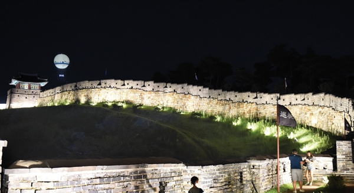
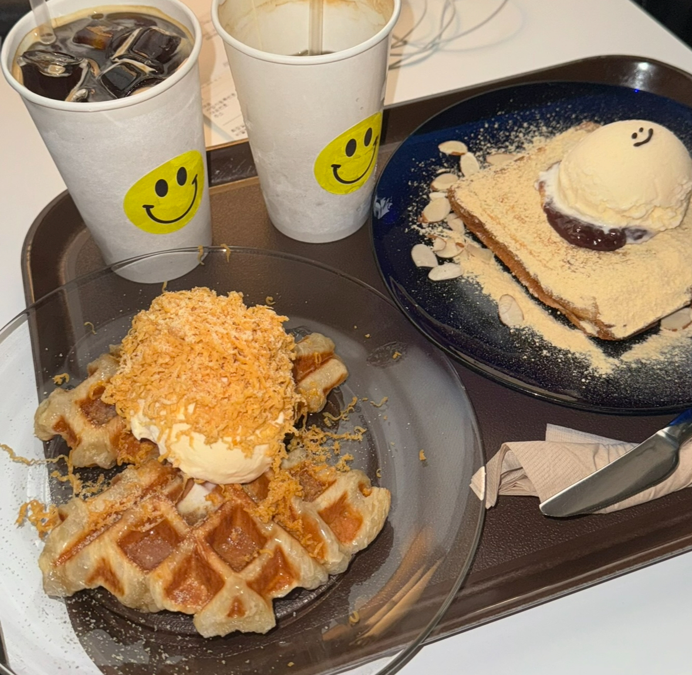
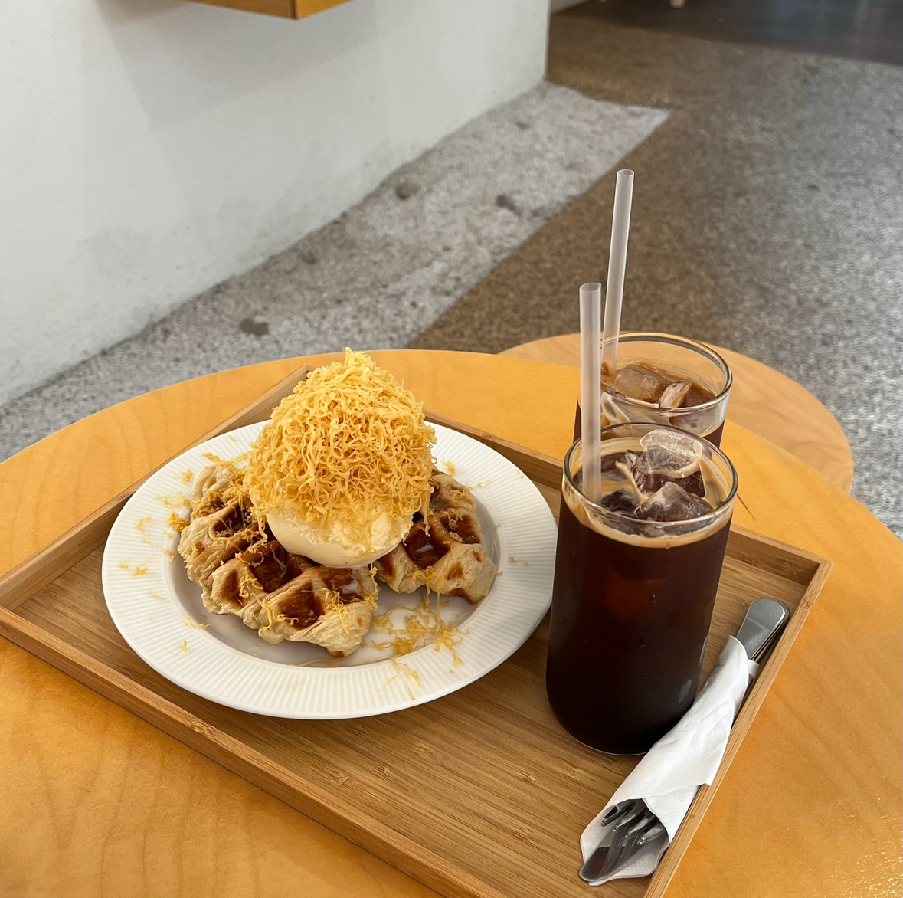
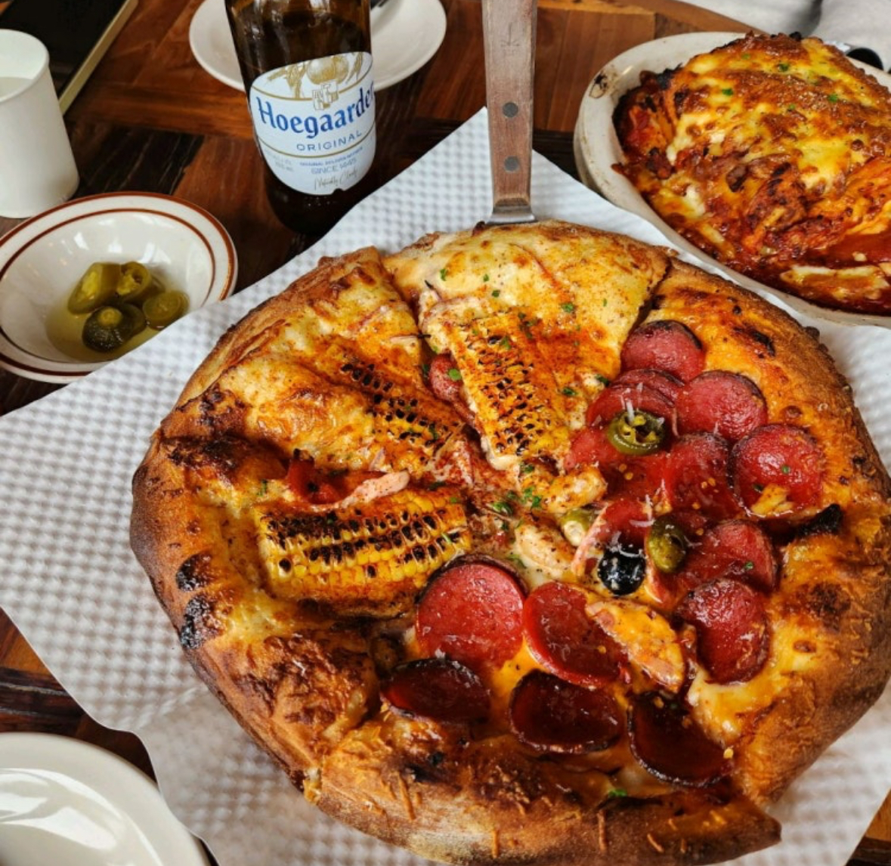
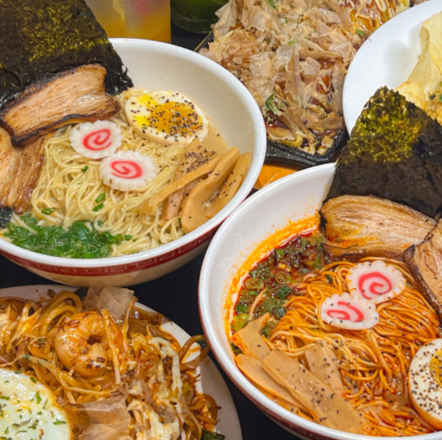

행궁동 소개
화성행궁 근처에 행궁동 카페거리(일명 행리단길) 등이 조성되어 데이트 코스로 각광받고 있다.
행궁동 추천 카페
- 
- 홍라드
- 다양하고 예쁜 디저트가 많은 카페
- 
- 평지담
- 한적한 곳에 자리 잡고 있는 카페
'행리단길' 이라고 불려지기 시작하며 젊은 사람들이 많이 찾는 만큼 분위기 있는 카페와 아기자기한 소품샵이 많이 생기고 있다.
행궁동 추천 맛집
- 
- 로우파이브
- 예쁜 인테리어와 옥수수피자가 맛있는 양식집
- 
- 토리코
- 라멘과 술을 함께 즐길 수 있는 곳